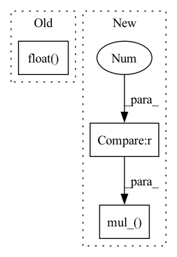

Pattern ID :1865

Before Change
indr_rev = torch.argsort(indr)
c6 = (w < 0).float()
d = (-t + c6) * (w != 0).float()
ds = torch.min(-w * t, w * (1 - t)).gather(1, indr)
ds2 = torch.cat((c.unsqueeze(-1), ds), 1)
s = torch.cumsum(ds2, dim=1)
After Change
d[c2] *= u3
d[c2, indr] = alpha
return d.mul_(w_abs > 1e-8)
def projection_l2(points_to_project: Tensor, w_hyperplane: Tensor, b_hyperplane: Tensor) -> Tensor:
device = points_to_project.device
In pattern: SUPERPATTERN
Frequency: 3
Non-data size: 3
Instances
Fragment ID: 8357519
Project Name: jeromerony/adversarial-library
Commit Name: 2029db3a63f5c2df29bcbaad4c0e299938bcc8c8
Time: 2022-03-27
Author: jerome.rony.1@etsmtl.net
File Name: adv_lib/attacks/fast_adaptive_boundary/projections.py
M Class Name: AnonimousClass
N Class Name: AnonimousClass
M Method Name: projection_l1(3)
N Method Name: projection_l1(3)
M Parent Class:
N Parent Class:
M File Name: adv_lib/attacks/fast_adaptive_boundary/projections.py
N File Name: adv_lib/attacks/fast_adaptive_boundary/projections.py
M Start Line: 12
M End Line: 53
N Start Line: 12
N End Line: 53
'>
Before Change
valid_block = torch.reshape(valid_block, (1, 1, height, width)).float()
uniform_noise = torch.rand_like(x, dtype=torch.float32)
block_mask = ((2 - seed_drop_rate - valid_block + uniform_noise) >= 1).float()
block_mask = -F.max_pool2d(
-block_mask,
kernel_size=clipped_block_size, // block_size, ???
stride=1,
After Change
uniform_noise = torch.rand((1, C, H, W), dtype=x.dtype, device=x.device)
else:
uniform_noise = torch.rand_like(x)
block_mask = ((2 - gamma - valid_block + uniform_noise) >= 1).to(dtype=x.dtype)
block_mask = -F.max_pool2d(
-block_mask,
kernel_size=clipped_block_size, // block_size,
stride=1,
padding=clipped_block_size // 2)
if with_noise:
normal_noise = torch.randn((1, C, H, W), dtype=x.dtype, device=x.device) if batchwise else torch.randn_like(x)
if inplace:
x.mul_(block_mask).add_(normal_noise * (1 - block_mask))
else:
x = x * block_mask + normal_noise * (1 - block_mask)
else:
normalize_scale = (block_mask.numel() / block_mask.to(dtype=torch.float32).sum().add(1e-7)).to(x.dtype)
if inplace:
x.mul_(block_mask * normalize_scale)
else:
x = x * block_mask * normalize_scale
return x
'>
Fragment ID: 8357518
Project Name: feng-lab/pytorch-image-models
Commit Name: 1904ed8fecdb3f37818378421350315d2abf1224
Time: 2020-05-13
Author: rwightman@gmail.com
File Name: timm/models/layers/drop.py
M Class Name: AnonimousClass
N Class Name: AnonimousClass
M Method Name: drop_block_2d(7)
N Method Name: drop_block_2d(6)
M Parent Class:
N Parent Class:
M File Name: timm/models/layers/drop.py
N File Name: timm/models/layers/drop.py
M Start Line: 25
M End Line: 62
N Start Line: 26
N End Line: 69
'>
Before Change
if c2.any():
alpha = -s[c2, lb2] / w[c2, indr[c2, lb2]]
c5 = u2[c2].float() < lb.unsqueeze(-1).float()
u3 = c5[u[:c5.shape[0]], indr_rev[c2]]
d[c2] = d[c2] * u3.float()
d[c2, indr[c2, lb2]] = alpha
After Change
t, w, b = points_to_project, w_hyperplane.clone(), b_hyperplane
c = (w * t).sum(1) - b
ind2 = 2 * (c >= 0) - 1
w.mul_(ind2.unsqueeze(1))
c.mul_(ind2)
r = (1 / w).abs().clamp_max(1e12)
indr = torch.argsort(r, dim=1)
indr_rev = torch.argsort(indr)
'>
Fragment ID: 8357526
Project Name: jeromerony/adversarial-library
Commit Name: 1f51f51770105e045bf985ab7553d5480efc4dbe
Time: 2020-11-26
Author: jerome.rony@gmail.com
File Name: adv_lib/attacks/fast_adaptive_boundary/projections.py
M Class Name: AnonimousClass
N Class Name: AnonimousClass
M Method Name: projection_l1(3)
N Method Name: projection_l1(3)
M Parent Class:
N Parent Class:
M File Name: adv_lib/attacks/fast_adaptive_boundary/projections.py
N File Name: adv_lib/attacks/fast_adaptive_boundary/projections.py
M Start Line: 235
M End Line: 273
N Start Line: 235
N End Line: 274